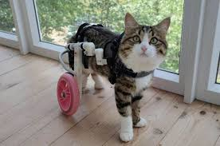
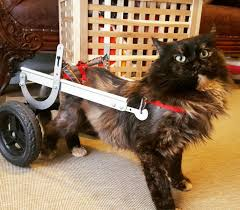
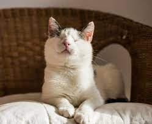
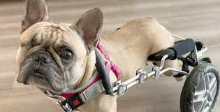
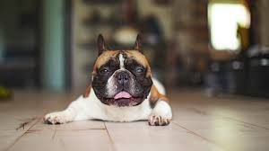
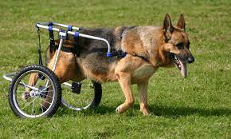

Layla is a female American Shorthair. Her back legs are paralyzed but it wont stop her from being the best cuddler

Cocoa is a brown and black Turkish Angora. Her back legs are paralyzed but shes still an amazing companion to have.

Ella is a White female Korat. Due to an infection she lost her eyes but shes still one of our most active cats around.

Charlie is male French Bulldog. He currently only has one eye and is paralyzed but best at playing fetch with you.

Duke is a male French Bulldog Mix. He is currently 70% blind but that wont stop him from trying to always be at your side.

Rosie is a German Shepherd. She is currently paralyzed from her back legs but still loves to run outdoors.